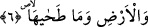
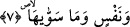

6. Yere ve onu yapıp döşeyene,
Yani üzerindekiler yaşayabilsinler diye yeri her yönden su üzerinde yayıp döşeyene.
Bu sûrede bazı yaratılmışlarının özel olarak zikredilmesi, Yaratan’ın onlara
atfedilmesi, hem onlara hem de Allah’a yemin edilmesi, onların ve Allah’ın tâzime
müstehak olma konusunda eşit olmalarından değildir. Tam tersine bu şekilde
sıralanmasındaki nükte, âlemin yaratıcısının varlığını, kudretinin kemâlini ortaya
çıkarmak ve insan aklının mümkün olduğu kadar Allah’ın celal ve şânının azametini
idrak etmesini sağlamaktır. Çünkü Allah Teâlâ dış dünyada görülen mahlukların içinde
şeref ve faydası en büyük olan güneşe yemin etti. Onu ışığı olmak, ayın izlediği bir
varlık olmak, gün ortasında parlamak ve gece olunca gizlenmek gibi dört vasfını ifâde
buyurdu. Ardından güneşin yol alıp gittiği yer ve ondan daha büyük olan semâya yemin
etti. Böylece bu ikisinin durumunun büyüklüğüne dikkat çekti. Çünkü bir şeye yemin
etmek onu yüceltmek anlamına gelir. Bilindiği üzere güneş ve gökyüzü hareket ettikleri
ve halden hale girdikleri için herşeyi planlayan, kudreti kâmil, hikmeti sonsuz bir
yaratıcıya muhtaç olan mümkinattan olan cisimlerdendirler. İşte böylece akıl güneş ile
gökyüzünün durumunu ve vasıflarını öğrenmek vesilesiyle onları yaratanın büyüklüğüne
ulaşır. Dolayısıyla âyetlerdeki zikredilen sıralama, insan aklını şu hissedilen süflî
âlemden rubûbiyet âlemine ve samediyyetin kibriyâsının engin sahasına çekip götüren
bir yol gibidir.
Bu âyette ruhlar semâsına ve cesedler arzına işâret vardır.
7. Nefse ve onu yaratana,
Nefse ve onu kemâlâtını elde edecek yetenekte var edip yoktan yaratana yemin
ederim.
“Nefs” kelimesinin nekre getirilmesi yüceltmek içindir. Bu durum “nefis” ile Âdem
(a.s.)’ ın kasdedilmesine göredir. Ya da çokluk ifâde etmek içindir ki aşağıda gelecek
kasemin cevabına daha uygun olan budur.
Allah Teâlâ’nın zâtını tanıtmak için bu âyetlerde gökyüzü, yeryüzü ve nefis
zikredilmiştir. Çünkü görülmeyen bir şeye ancak görülen vâsıtasıyla akıl yürütmek
mümkündür. Görülen ise cismânî âlemden başkası değildir. Bu cismâni âlem ya gök gibi
ulvî ve basittir, ya yeryüzü gibi süflî ve basittir veya mürekkeptir. Mürekkeb olan kısım
çeşit çeşittir. Bunların içinde en şereflisi nefis sâhibi olan varlıklardır.
Yukarıdaki ifâdelerin takdîri şöyledir: “… ve onu binâ eden rabbine, … ve onu yayıp
döşeyen rabbine, … ve onu yaratan rabbine.”